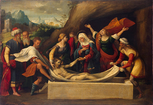
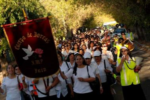
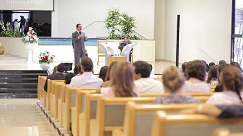

Celebración de la semana santa
En que consiste la semana santa
La Semana Santa es la conmemoración anual cristiana de la Pasión, Muerte y Resurrección de Jesús de Nazaret. Por eso, es un período de intensa actividad litúrgica dentro de las diversas confesiones cristianas. Da comienzo el Domingo de Ramos y finaliza el Domingo de Resurrección, aunque su celebración suele iniciarse en varios lugares el viernes anterior (Viernes de Dolores) y se considera parte de la misma el Domingo de Resurrección. La fecha de la celebración es variable (entre marzo y abril según el año) ya que depende del calendario lunar. La Semana Santa va precedida por la Cuaresma, que finaliza en la Semana de Pasión donde se celebra la eucaristía en el Jueves Santo, se conmemora la Crucifixión de Jesús el Viernes Santo y la Resurrección en la Vigilia Pascual durante la noche del Sábado Santo al Domingo de Resurrección. Durante la Semana Santa tienen lugar numerosas muestras de religiosidad popular a lo largo de todo el mundo, destacando las procesiones y las representaciones de la Pasión.

Dias de celebración
Jueves Santo
El Jueves Santo es junto con el Corpus Cristi y la Ascensión, el primero de los Tres Jueves del año más importantes en la religión católica. Al ser una fiesta de marcado carácter religioso no podemos dejar de mencionar sus peculiaridades en este aspecto. Es el día en que se celebra la última Cena en que Cristo instituyó la Eucaristía. También se escenifica el Lavatorio de los pies (sobre esto versa el Evangelio). Los pasos y procesiones se vuelcan en estas significaciones y empiezan a avanzar, ya en la noche, el misterio del Viernes Santo.
El Jueves Santo tiene una celebración muy sobrecogedora y peculiar que se denomina el OFICIO DE TINIEBLAS, en la noche, después de apagar las luces, se van apagando paulatinamente todas las velas hasta dejar toda la iglesia a oscuras. Y así, en plena oscuridad, y sin acompañamiento de órgano, se canta el bellísimo Christus factus est. En realidad es un funeral por el Cristo muerto.
La misa de este día, que al ser conmemorativa de la última cena del Señor se celebra entre las 7 y las 8 de la tarde, tiene de especial, que en la lógica litúrgica es la PRIMERA MISA del año. De hecho las misas de todos los domingos lo que hacen es reproducir esta última cena a lo largo de todo el año. Por eso, sin tener nada distinto de la misa de cualquier domingo, se le da una especial solemnidad, como dando a entender que los demás días del año se repite la Consagración del Cuerpo y de la Sangre de Cristo.
Las lecturas de el Evangelio que se hacen en este día hacen referencia al lavatorio de los pies que precedió a la santa cena; un acto que destaca como muestra del amor fraterno empezando por los más necesitados. Y que el sacerdote que oficia la misa de este día vuelve a representar, lavando los pies a los demás sacerdotes en señal de humildad, mucha gente acude a ver esta escenificación muy típica de este día.
Después del lavatorio viene la gran solemnidad eucarística.Tras la consagración se lleva la Eucaristía al altar secundario que ha sido adornado como “monumento”, sirviéndose especialmente de las palmas del Domingo de Ramos, que los fieles prestan para este fin.
Viernes Santo
Es el día del máximo dolor y de la muerte de Jesús. Día de riguroso luto y no se celebra misa, sino un rito de oración, es el único del año en que no se celebra para expresar el luto de la iglesia. Se lee la Pasión según san Juan, se reza por todas las causas en una continua ceremonia de arrodillarse y levantarse, y en el centro de la celebración está la solemne adoración de la Cruz, pero como ya hemos mencionado no es una misa, sino un rito de oración. La mañana de este día se dedica a prácticas piadosas como el Vía Crucis, la visita a los monumentos, las procesiones penitenciales.
Es el día del máximo dolor y de la muerte de Jesús. Día de riguroso luto y no se celebra misa, sino un rito de oración, es el único del año en que no se celebra para expresar el luto de la iglesia. Se lee la Pasión según san Juan, se reza por todas las causas en una continua ceremonia de arrodillarse y levantarse, y en el centro de la celebración está la solemne adoración de la Cruz, pero como ya hemos mencionado no es una misa, sino un rito de oración. La mañana de este día se dedica a prácticas piadosas como el Vía Crucis, la visita a los monumentos, las procesiones penitenciales.
Es el segundo gran día de las procesiones en que se vuelca el dolor por la muerte de Cristo y el dolor de su madre. Todas las procesiones que hoy desfilen estarán marcadas por la seriedad y sobriedad. Muchas de ellas con nombres como: Monte Calvario, El Sepulcro, El descendimiento....que no dejan duda de lo que hoy se conmemora.
Sábado Santo
Es día de luto porque Cristo descansa en el sepulcro y hoy no hay misa. La iglesia guarda silencio: desde el viernes no suena el órgano acompañando los cantos, en señal de austeridad y dolor.
El sábado santo es día de recogimiento, remiten las procesiones, se reza en silencio. Hace algunos años sólo salía a procesionar un paso, aunque su número ha ido aumentando, no desfilan tantos como el Viernes. La gran celebración de hoy mira ya hacia la Resurrección, y es lo que se está preparando.
Las vigilias comienzan al caer el sol y se prolongan durante toda la noche.
La preparación de la Pascua comienza con la bendición del fuego nuevo, que se toma de una hoguera encendida fuera de la iglesia, estando ésta totalmente a oscuras y esperando los fieles con cirios apagados en la mano. El sacerdote enciende en ella una tea que una vez bendecida encenderán con ella sus velas los fieles. Hacia el final de este canto se procede a encender el cirio pascual, al que se le ponen los cinco granos de incienso que representan la inmortalidad, el Alfa y la Omega, y la fecha del año en curso; tras esto se encienden todas las luces de la iglesia. También se bendicen las aguas bautismales.
Domingo de Resurrección
El Domingo de Resurrección, es el día en que Jesucristo resucita después de la crucifixión, va al encuentro con sus apóstoles y luego sube hacia los cielos, también es la finalización de la Semana Santa.
El Domingo de Resurrección o de Pascua es importante para los católicos, ya que con la Resurrección es cuando adquiere sentido toda su religión.
En la Misa dominical este pasaje se recuerda de una manera especial. Se enciende el Cirio Pascual que representa la luz de Cristo resucitado y que permanecerá prendido hasta el día de la Ascensión, cuando Jesús sube al Cielo.
Este día de resurrección es alegre pero triste para los Cofrades, alegre por la manifestación de la resurrección que sustenta la religión y triste porque la Semana Santa finaliza.
¿Cómo la celebran otras religiones?
¿Cómo la celebran los Pentecostales?
La celebración de la Semana Santa para los pentecostales inicia el jueves a las dos de la tarde con un desfile, en el cual reparten volantes, entonan canciones e invitan a toda la comunidad a congregarse en una reunión que tiene lugar en su centro de culto a las seis de la tarde.
Una vez allí en el templo, dan apertura a la fiesta denominada ‘Levántate, hoy es el día de tu salvación’. En este acto se efectúan bautizos, y llevan a cabo cuatro cultos o reuniones especiales.
Desde el día jueves se reúnen a alabar a Dios, para ello cuentan con la presencia de grupos musicales, duetos, mariachis y vallenatos, entre otros, porque, en realidad, viven una fiesta
El viernes tienen la gran confraternidad, en donde a las 6:00 de la mañana y a las 2:00 y 5:30 de la tarde adoran a Jesús, para reconocerle su grandeza y su poder. Aparte de eso piden por la salud de los enfermos y porque se mejore la situación del mundo, manifestó José Ignacio Sierra.
De acuerdo con la información suministrada por los pentecostales, en sus encuentros el Espíritu Santo se manifiesta. Quienes asisten y tienen un encuentro personal reciben el don del Espíritu, con la evidencia de hablar en otros idiomas.
“Aquí nadie se cae o bota espuma por la boca, el Espíritu Santo es algo que hace que la persona conscientemente comienza a proferir palabras en otro idioma, pero esa es la manifestación del gozo de Dios”, mencionó un pastor de esta Iglesia.
De otra parte, quienes integran esta religión sostienen que existen alimentos prohibidos por las escrituras, tanto para la Semana Santa como para el resto del año, y son tanto aquellos que tienen sangre como la carne de los animales que han sido ahogados.
¿Cómo la celebran los Adventistas?
En el sentir de los adventistas, la Semana Santa es la conmemoración de la pasión de Cristo; sin embargo, los seis días los trabajan normalmente, además, no tienen prohibición para ingerir alimentos, aunque tienden a ser vegetarianos
“Nosotros nos ceñimos a la Biblia y en ella no dice en ninguna parte que debemos descansar; lo que se señala allí es que hay que descansar antes de la preparación, es decir, el viernes. El sábado es el día de nuestro culto. Y el domingo también oramos.
“Un acto que reviste de mucha importancia es el lavatorio de pies, pero esto lo hacemos cada tres meses; adicionalmente, hacemos una cena con pan y con vino”, dijo Pedro Obando, adventista desde hace 40 años.
Para los adventistas, “las estaciones del vía crucis son 14 crucecitas de madera, pegadas a las paredes de una iglesia. Los 14 cuadros representan varias escenas de la vida de Cristo camino al calvario que no son estrictamente necesarias.